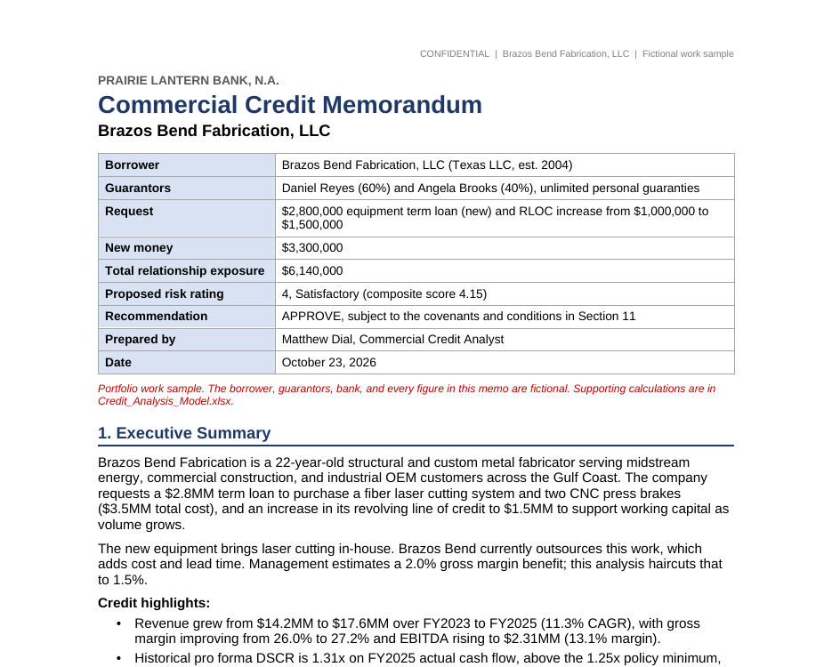
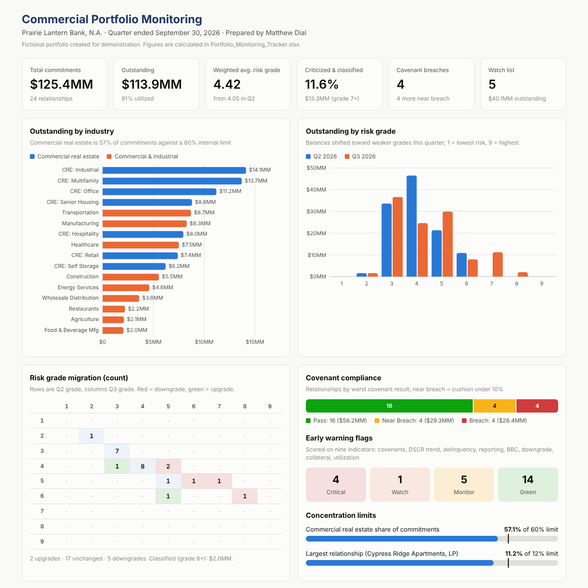
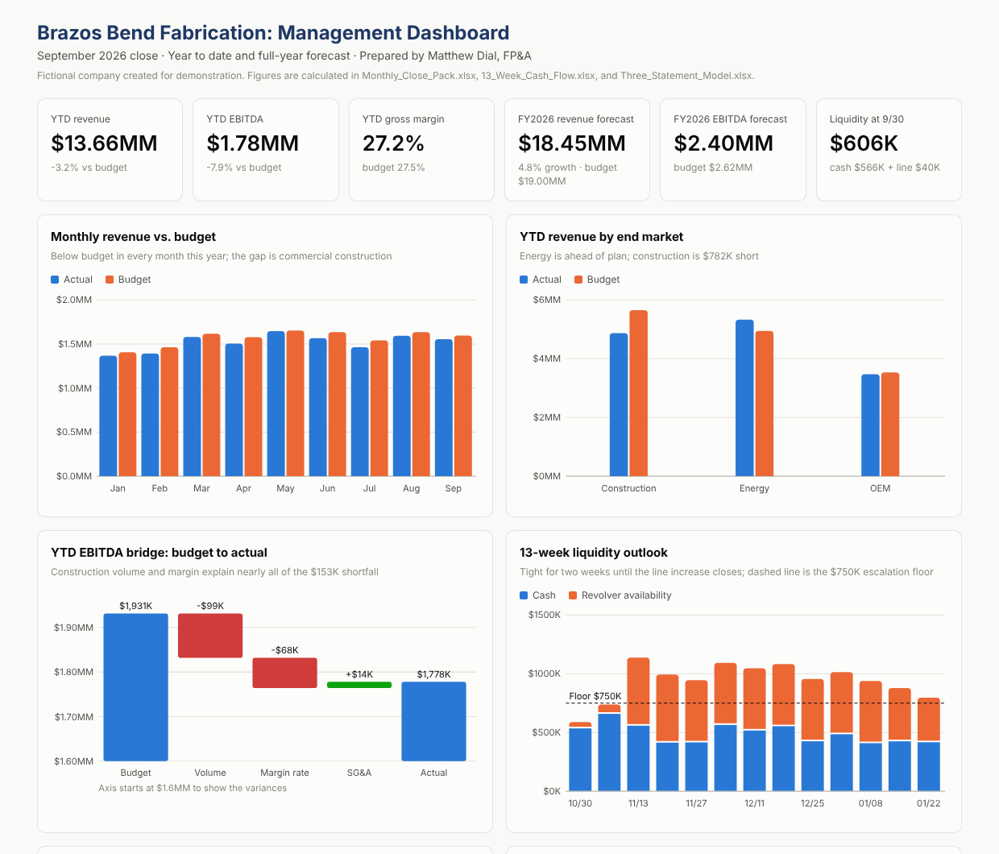
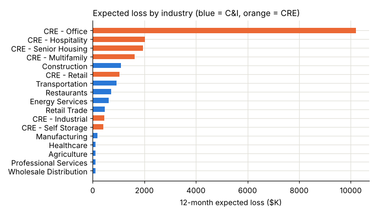

Commercial credit package
A full underwriting of a $2.8MM equipment loan and a line of credit increase for a Gulf Coast metal fabricator, from spreadsheet to signed recommendation.

- Credit memorandumSix-page memo with structure, risks, and covenantsRead PDF
- Credit analysis modelSpread, ratios, global cash flow, stress test, risk ratingDownload Excel
- Industry risk brief and SBA checklistMarket context and SBA 7(a) program rulesView on GitHub
Judgment call: the stress test showed thin coverage in a downturn, so the structure adds a limit on owner distributions if DSCR falls below 1.35x.
Portfolio monitoring
Quarterly review of a $125MM, 24-loan commercial portfolio: covenant testing, early warning scoring, and a watch list that builds itself.

- Portfolio dashboardHover charts, sort and filter every loanOpen dashboard
- Monitoring trackerNine tabs, 1,600+ formulas, self-ranking watch listDownload Excel
- Q3 2026 portfolio reviewAction plans for each watch list loanRead review
Design choice: loans that pass a covenant by less than 10% are flagged anyway, because by the time a covenant breaks it is late to act.
FP&A and treasury
The borrower from Package 01, seen from its own finance team: month-end close, a 13-week cash forecast, and a three-statement model tested against the bank's covenants.

- Management dashboardBudget vs. actual, EBITDA bridge, cash outlookOpen dashboard
- Monthly close packVariance analysis, bank reconciliation, KPIsDownload Excel
- 13-week cash flowCollections curve, payroll calendar, revolver logicDownload Excel
- Three-statement modelBase, upside, and downside through FY2029Download Excel
Finding: the downside case still passes the bank's coverage test, because owners take less out when profits fall. The owners feel the downturn before the bank does.
Credit data and analytics
A bank-wide loan database with a library of portfolio SQL queries and a probability of default model, validated on a year it never saw.

- PD model notebookWoE, logistic regression, validation, scorecardView notebook
- SQL query resultsDelinquency, migration, vintages, loss given defaultRead results
- Model development documentMethod, performance, limitations, monitoringRead document
Honest limit: the model ranks risk well but its probabilities are too spread out, so they'd be recalibrated before setting reserves. Data is synthetic and labeled as such.